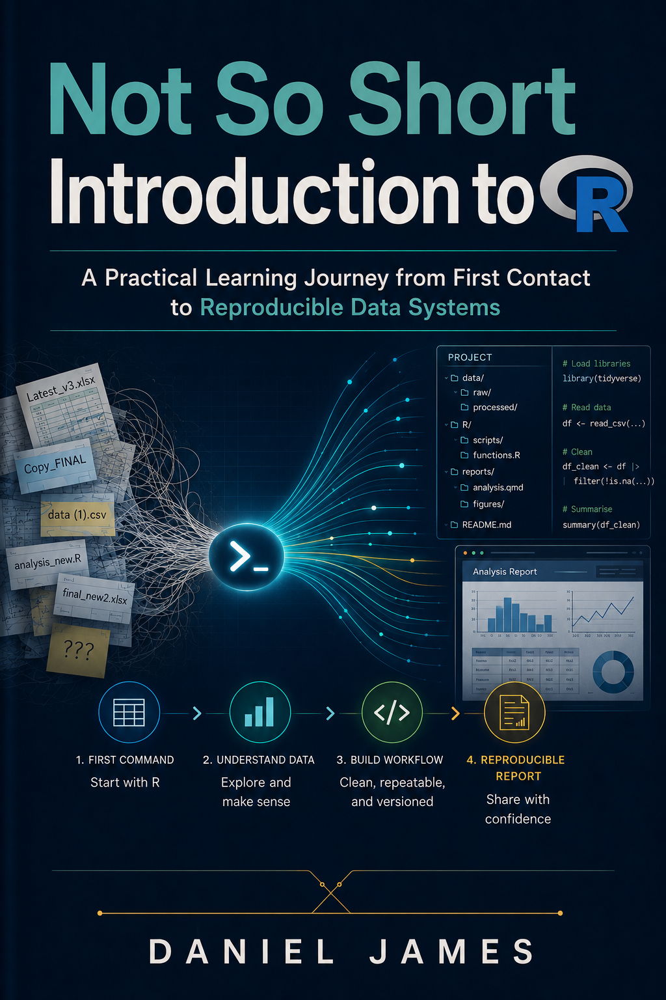

Code
version$version.string
#> [1] "R version 4.5.2 (2025-10-31 ucrt)"A Practical Learning Journey from First Contact to Reproducible Data Systems
R, R programming, data analysis, reproducible workflows, RStudio, Quarto, data cleaning, data visualization, beginner R

For the learners who have carried data work by memory, patience, and trial and error, and who are ready to turn that effort into a clearer, repeatable way of working.
This book is for people who want to learn R without being rushed past the part where confusion usually begins.
You may be a researcher, analyst, graduate student, lecturer, professional, or self-taught learner. You may already work with data in Excel, Google Sheets, SPSS, STATA, forms, dashboards, or exported files from different systems. You may have copied code from a tutorial or asked an AI tool for help, only to find that the code worked once but did not become a method you could fully explain.
You are not starting from nothing.
You already know that data work can be messy. You know that files arrive in different formats. You know that columns change names. You know that values look correct until they refuse to calculate. You know that a result is easier to trust when the path behind it is clear.
This book was built for that learner.
Not the person who wants to become a software engineer overnight.
Not the person looking for a thin list of shortcuts.
The serious beginner who wants to understand R properly, from first contact with the console to reproducible data systems.
This book is written for learners whose work, study, or research depends on data, but who need a patient route into R.
You are likely a fit for this book if you:
You do not need a computer science background to begin.
You need patience, curiosity, and a willingness to let small ideas become clear before rushing into large ones.
Many introductions to R start too quickly.
They begin with syntax, packages, or datasets before the learner understands what kind of system R is. The beginner is asked to run commands before understanding where the commands live, what objects are, why types matter, or how the work will be saved and repeated.
That creates a familiar problem.
The learner may produce an output without building understanding.
A command works, but the meaning is unclear.
An error appears, but the cause is hidden.
A package is loaded, but the learner does not know what R itself is doing.
This book slows down at the right places.
It treats R as a working system, not only a language of isolated commands. It begins with first contact, then builds the ideas that make later data work possible: objects, types, structures, syntax, logic, functions, packages, cleaning, transformation, visualization, communication, reproducibility, collaboration, and scale.
The aim is not to make R look easy by hiding its structure.
The aim is to make R learnable by revealing the structure in the right order.
Do not read this book like a reference manual.
Read it like a learning journey.
Each chapter follows Leo, a capable beginner who wants to understand R without pretending that the early confusion is not real. Leo’s questions are part of the method. When he pauses, the book slows down. When he meets a problem, the book uses that problem to introduce the next idea.
You will get the most from this book if you use it in three passes.
First, read for orientation. Let the story and explanations give you the mental map.
Second, read with R open. Run the code examples slowly and notice what changes.
Third, read for transfer. Start connecting the ideas to your own data work, research task, class activity, or reporting problem.
You do not need to master everything at once.
You need one clear concept, then another.
You do not need to be a programmer before you begin.
You do need a few practical things:
Later in the book, you will work with the teaching dataset df_r_migration. It will help you practise real data ideas without jumping between unrelated examples.
For now, the most important tool is attention.
By the end of this book, you should be able to:
The focus throughout is practical understanding.
This is not a book about sounding technical.
It is a book about becoming capable with R in a way that can survive real work.
This book does not begin by throwing the learner into a full dataset and hoping the concepts become clear later.
It begins with first contact.
The early chapters give Leo the mental ground: what R is, how the R ecosystem is organized, what objects are, why data types matter, and how structures shape behaviour. Only after that foundation does the book move into data cleaning, transformation, visualization, reporting, and reproducible systems.
The teaching style is deliberate.
Small examples appear before larger ones.
Friction appears before the tool that resolves it.
Concepts are named after Leo has felt why they matter.
The book also uses one main teaching dataset, df_r_migration, so that the learning journey stays coherent. Leo does not jump from fruit examples to car examples to unrelated toy data. The same dataset grows with him as the work becomes more realistic.
You are not only learning commands.
You are learning how R thinks about data.
The structure follows a gradual movement from first contact to reproducible data systems.
This is not a race toward advanced code.
It is a steady movement toward control.
The code blocks throughout the book are meant to be executable. This quick check confirms that your R session is working.
version$version.string
#> [1] "R version 4.5.2 (2025-10-31 ucrt)"